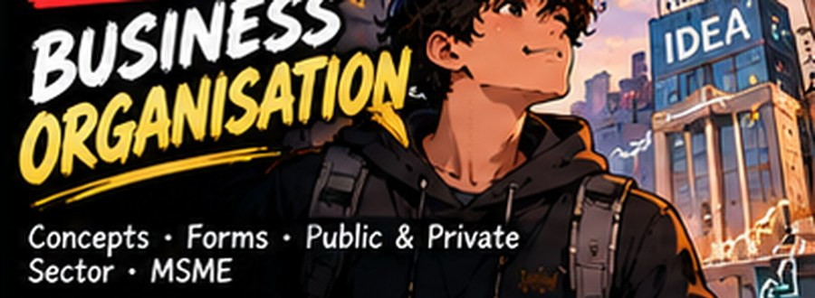
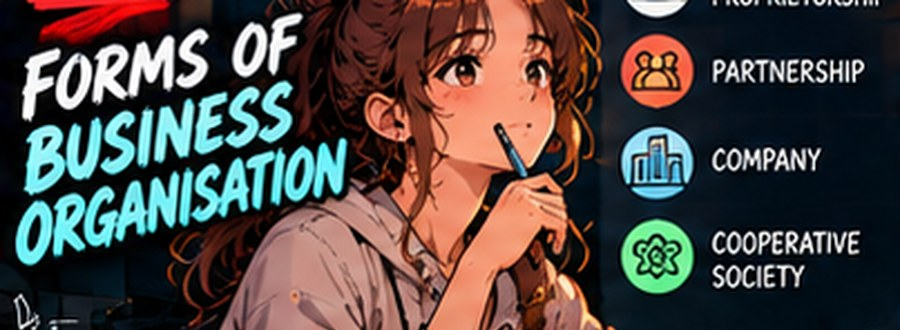
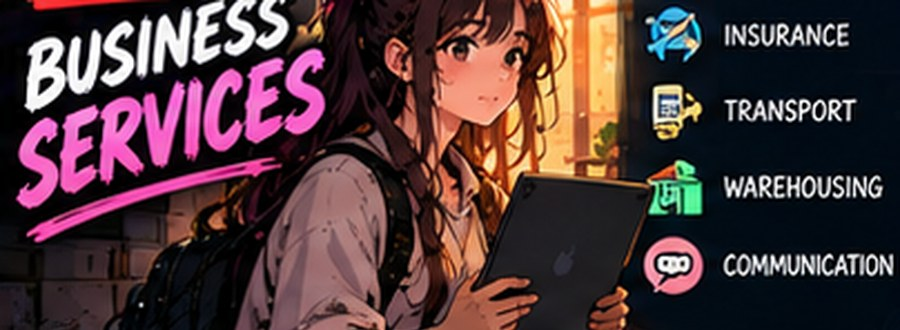
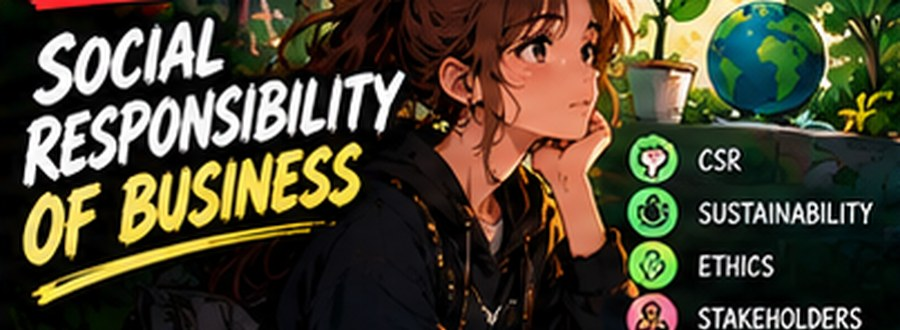
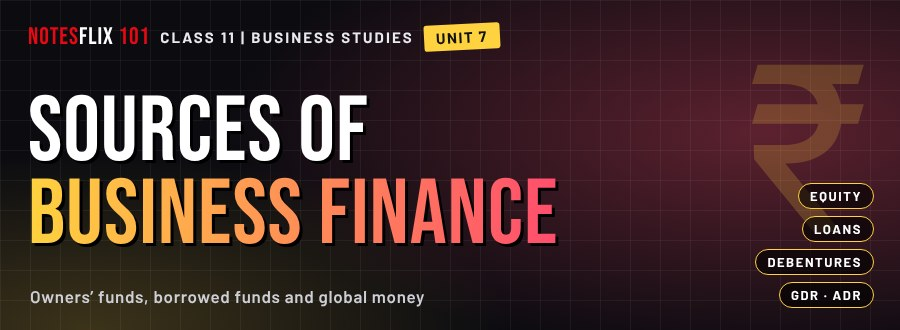
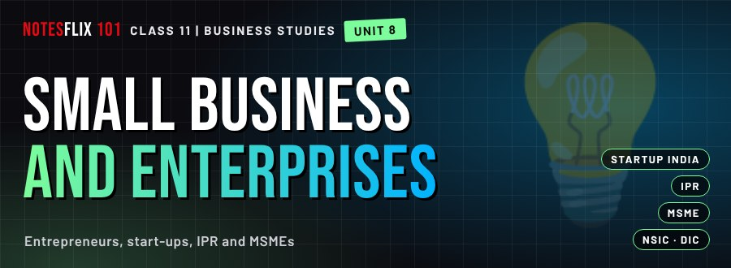
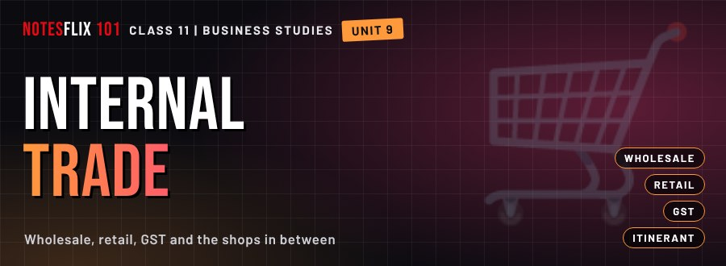
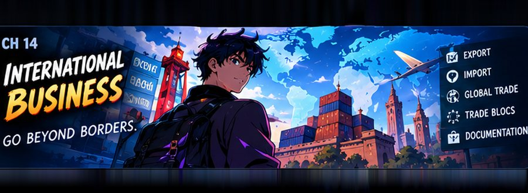

Class 11 Business Studies Notes
Interactive CBSE Class 11 Business Studies notes from Notesflix 101. They follow the CBSE syllabus and NCERT textbook for Class 11. Each chapter is broken into short parts with easy explanations, picture stories, flash cards, quizzes and board-style exam questions with model answers. All 43 parts open with a password from Notesflix 101.
Chapters

Unit 1: Business, Trade and Commerce
What business is, why it exists, and how trade grew in India.
- What Is Business?PASSWORD — Business, profession and employment: meaning and characteristics. (25 min)
- Objectives and IndustryPASSWORD — Objectives of business, the role of profit, and industry: primary, secondary, tertiary. (25 min)
- Commerce and Business RiskPASSWORD — Commerce: trade and its auxiliaries, and the risks of doing business. (25 min)
- History of Trade in IndiaPASSWORD — Trade and commerce in India through the ages: indigenous banking, intermediaries, transport and merchants. (25 min)

Unit 2: Forms of Business Organisation
Choosing how to own and run a business: alone, in partners, or as a company.
- Sole Proprietorship and HUFPASSWORD — Sole proprietorship: features, merits and limitations; the HUF business. (25 min)
- PartnershipPASSWORD — Partnership: features, types of partners, the partnership deed and registration. (25 min)
- Cooperative SocietiesPASSWORD — Cooperative societies: concept, features, merits, limitations and types. (25 min)
- The CompanyPASSWORD — Company: features, types (private, public, One Person Company) and choosing a form. (25 min)
- Formation of a CompanyPASSWORD — Stages of forming a company and the important documents. (25 min)
Unit 3: Public, Private and Global Enterprises
Who owns the business: the state, private owners, or the whole world.
- Public Sector and Departmental UndertakingsPASSWORD — Public and private sector; forms of public enterprise; departmental undertakings. (25 min)
- Statutory Corporations and Government CompaniesPASSWORD — The three forms of public enterprise compared, with merits and limitations. (25 min)
- Global EnterprisesPASSWORD — Multinational corporations: meaning and seven features. (25 min)
- Joint Ventures and PPPPASSWORD — Joint ventures: meaning, types and benefits; public-private partnership. (25 min)
- Unit 3 Practice ArenaPASSWORD — Timed practice on public, private and global enterprises, with marks shown straight away. (25 min)

Unit 4: Business Services
The banks, insurers and post offices that keep business moving.
- Business Services and Bank AccountsPASSWORD — Business services, banking and the types of bank account. (25 min)
- Banking Services and Digital PaymentsPASSWORD — Bank draft, overdraft, cash credit, e-banking and digital payments. (25 min)
- Insurance PrinciplesPASSWORD — Insurance: how risk and premium work, and the seven principles. (25 min)
- Types of Insurance and Postal ServicesPASSWORD — Life, health, fire and marine insurance; the postal services. (25 min)
- Unit 4 Practice ArenaPASSWORD — Timed practice on business services, banks, insurance and postal services, with marks shown straight away. (25 min)
Unit 5: Emerging Modes of Business
How a lamp-maker in Jaipur sells to Paris tonight: e-business and who sells to whom online.
- E-Business: Concept and BenefitsPASSWORD — E-business and e-commerce, traditional versus e-business, and the five benefits. (25 min)
- Scope of E-BusinessPASSWORD — B2B, B2C, intra-B and C2C commerce: who sells to whom online. (25 min)

Unit 6: Social Responsibility and Business Ethics
Beyond profit: who a business answers to, and what it owes the planet.
- Concept and Case for Social ResponsibilityPASSWORD — Social responsibility: concept, legal versus social responsibility, and the case for it. (25 min)
- Responsibility Towards Different GroupsPASSWORD — Owners, consumers, employees, government and the community. (25 min)
- Environment Protection and Business EthicsPASSWORD — Pollution and its control, the role of business, and the elements of business ethics. (25 min)

Unit 7: Sources of Business Finance
Where the money comes from: owners, lenders, and investors across the world.
- Business Finance: Owners’ and Borrowed FundsPASSWORD — Meaning and need of business finance, fixed and working capital, owners’ funds and borrowed funds. (25 min)
- Equity, Retained Earnings and Preference SharesPASSWORD — Equity shares, retained earnings, preference shares and their types, with merits and limits. (25 min)
- GDR, ADR, IDR and DebenturesPASSWORD — Raising money abroad through GDR, ADR and IDR, and fixed-interest debentures and bonds. (25 min)
- Loans, Deposits, Trade Credit and ICDsPASSWORD — Bank loans, financial institutions, public deposits, trade credit and inter-corporate deposits. (25 min)
- Unit 7 Practice ArenaPASSWORD — Timed practice on sources of business finance, with marks shown straight away. (25 min)

Unit 8: Small Business and Enterprises
From a spark of an idea to a registered small business, and the schemes behind it.
- Entrepreneurship: Concept, Characteristics and NeedPASSWORD — What entrepreneurship is, who an entrepreneur is, and why a country needs them. (25 min)
- Startup India and Ways to Fund Start-upsPASSWORD — The Startup India scheme, its action plan, and where a start-up finds money. (25 min)
- Intellectual Property Rights and EntrepreneurshipPASSWORD — Patents, trademarks, copyright and why protecting an idea matters. (25 min)
- MSMEs, Role of Small Business, NSIC and DICPASSWORD — The MSMED Act classes, what small business does for the economy, and who supports it. (25 min)
- Unit 8 Practice ArenaPASSWORD — Timed practice on small business and entrepreneurship, with marks shown straight away. (25 min)

Unit 9: Internal Trade
From the wholesaler to the corner shop: how goods reach the customer.
- Internal Trade: Wholesale, Retail and GSTPASSWORD — Wholesale and retail trade, types of retailers, and how GST works, with practice simulators. (30 min)

Chapter 14: International Business
The complete export and import journey, from the first enquiry to the payment landing home.
- International Business — Part 1PASSWORD — Why countries trade, and the ways a firm can go global. (26 min)
- Export Procedure — Part 2PASSWORD — From enquiry and order to production and pre-shipment. (30 min)
- Export Procedure — Part 3PASSWORD — Shipping bill, mate's receipt and the documents in between. (28 min)
- Customs Clearance — Step 13PASSWORD — What happens at the port before goods are allowed out. (22 min)
- From Shipment to Payment — Steps 14–17PASSWORD — Bill of lading, invoice, letter of credit and getting paid. (26 min)
- Import Trade MissionPASSWORD — The import procedure run as a mission you work through. (30 min)
- Practice ArenaPASSWORD — Timed questions across the whole export-import chapter. (35 min)
- Trade Quest PracticePASSWORD — Timed practice on internal trade, retail and GST, and international business. (25 min)
Frequently asked questions
Are the Class 11 Business Studies notes free?
All 43 parts open with a password from Notesflix 101.
Which syllabus do these Class 11 Business Studies notes follow?
They follow the CBSE syllabus and NCERT textbook for Class 11. Every chapter is split into short interactive parts with simple explanations, flash cards, quizzes and board-style exam questions with model answers.
How many chapters are covered?
10 chapters: Business, Trade and Commerce; Forms of Business Organisation; Public, Private and Global Enterprises; Business Services; Emerging Modes of Business; Social Responsibility and Business Ethics; Sources of Business Finance; Small Business and Enterprises; Internal Trade; International Business.
Is there a practice test for Class 11 Business Studies?
Yes. The Class 11 Business Studies Practice Marathon has 362 multiple-choice questions taken from the notes: a weekly marathon (30 questions, 20 minutes, the same set for everyone that week), a 10-question sprint, a 100-question mega marathon and chapter practice. A free sample is open to all; the full bank opens with the subject password.
How do I get the password for locked notes?
Email support@notesflix101.com with your name, class, school and the Gmail ID you sign in with. The same password opens every locked Business Studies note.